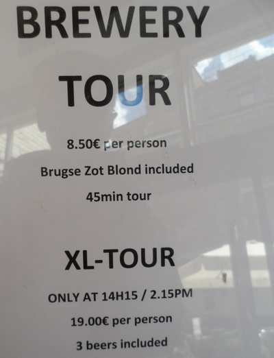

As you walk round the city your eyes are often treated to astounding views of its canals making Bruges a postcard city in the true sense of the word.

It will not do justice to show just one picture of the canals so here are a few of them. A boat ride that takes you in and out of the numerous canals costs 8 euros.

Another eye-refreshing view of the canals of the "Venice of the North". Truly nature at its best. Click on each photo to see a bigger version.

The canal waters go right up to the doorstep of some of the houses standing on the canals itself. The canal cruise lasts 30-45 minutes.

The main attraction in Markt square, the very heart of Bruges, is the towering Belfort, a 12th-century belfry.

Right in the centre is the statue of Jan Breydel and Pieter de Coninck, two important figures in the history of Flanders.

At the opposite end of the Markt square are tourist-oriented cafés and restaurants. There is a Quick here for budget travellers.

Another part of the Markt square - the Historium museum with the Tourism Office next to it. You can get a free map of Bruges here.

There is a very animated market at the Markt every Wednesday morning. The Wollestraat from here has souvenir and fancy shops on both sides of it and leads to a bridge across the Dijver canal, from where you can get a cruise boat.

Just next to the Markt square (take the street called Breidelstraat) is another "must-see" square, the Burg, where the City Hall (Stadhuis) is located. The top floor is open to the public.

Another building of interest at the Burg square is the Basilica of the Holy Blood. There is a lift to the top.

Inside the Basilica of the Holy Blood.

The quaint square at Simon Stevinplein, halfway between the Sint-Janhospitaal and the Markt. Take Mariastraat from here to go to the Sint-Janhospitaal, one of the tourist attractions in Bruges.

Formerly a Notre Dame church, this building, with a monastery on either side of it, has become the Onze-Lieve-Vrouwekerk Museum. Among its collection is Michelangelo's world famous "Madonna and Child" marble sculpture.

Just opposite the Onze-Lieve-Vrouwekerk Museum is the Sint-Janshospitaal, a hospital and pharmacy that was founded in the second half of the twelfth century. The Memling Museum is in its grounds.

The pharmacy at the hospital, which was still open until 1971, has been preserved intact for the benefit of visitors. More here on the Sint-Janshospitaal/Memling Museum.

Don't be confused by the museum tickets. All museum tickets have the same name "Musea Brugge" in big letters at the top and the particular museum's name is in tiny letters in the middle.

The Beguinale House is one of the historical attractions that Bruges has to offer. In the Middle Ages the departure of their husbands for the Crusades resulted in many women living in community. Upon the death of their husbands they devoted their lives to praying and to performing acts of charity. The place has been turned into a convent.

You might want to take a ride round the city in a caleche. It's quite costly though, at 50 euros. But if the bill is split among five persons it could become affordable. The driver told me that his horse is already 12 years old and can live to 30 years.

You can still find a couple of windmills just outside the city centre.

The main entrance to the Groeninge Museum. You can combine your visit to the museum with a canal cruise as there is a landing platform (No. 3) just on the opposite side of the museum entrance at the Dijver canal.

One of Jan van Eyck's best-known paintings at the Groeninge Museum. The museum is internationally known for its collection of works by the Flemish Primitives, foremost among them being Hans Memling, a German painter who was made a citizen of Bruges.

Fresh prawns at the Vismarkt (fish market) not far from the quay at Rozenhoedkaai. The market is closed on Sundays and Mondays.

At the end of your visit to Bruges you might want to visit the De Halve Maan brewery at Walplein 26 (enter by Walstraat) and try its famous Straffe-Hendrik (at 4.25 euros a glass) or Brugse Zot beer in the open-air terrace. You can even join a conducted tour of its brewery. More here.
Visiting Ostend
Visiting Brussels